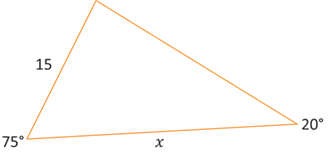
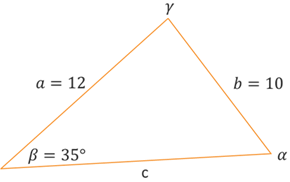
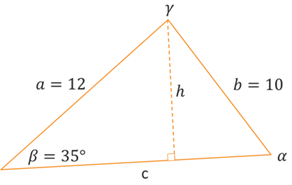

Laws of Sines & Cosines
Trigonometric Equations
Trigonometric Equations
Let's restate the law of sines and then look at some examples of solving triangles and applications using the law of sines. We will also look more specifically at the ambiguous SSA case.

Law of Sines: Given triangle ABC with opposite sides a, b, and c, respectively, the following proportions are true.
\[\frac{\sin{A}}{a} = \frac{\sin{B}}{b} = \frac{\sin{C}}{c}\]In situations where we are given two angles and a side, we can quickly find the 3rd angle because all 3 angles add up to 180°. Then set ups the proportions from the law of sines and cross-multiply to find the missing sides. Let's take a look at an example.
Self-Check #1: Find the value of x. Illustration may not be drawn to scale. (Enter your answer rounded to 2 decimal places.)
(Answer: 43.69) -- Looking at the given values in the triangle, we have two angles and the side adjacent to only one of them (not between them). This represents the AAS case for law fo sines. The bottom side of length \(x\) is opposite the unknown angle at the top. To find this angle, remember that the sum of the 3 angles must be 180°. So, if we call this unknown angle \(\theta\), then we have the equation \(20^{\circ} + 75^{\circ} + \theta = 180^{\circ}\). Solving this results in \(\theta = 85^{\circ}\). Next, we have two pairs of angles and their opposite sides which we can then set up a proportion using the law of sines.
\[\frac{\sin(85^{\circ})}{x} = \frac{\sin(20^{\circ})}{15}\]Cross-multiplying results in the equation \(x\sin(20^{\circ}) = 15\sin(85^{\circ})\). Then divide both sides by \(\sin(20^{\circ})\) to isolate the \(x\).
\[x = \frac{15\sin(85^{\circ})}{\sin(20^{\circ})}\]Using technology, we can compute this expression to get \(x \approx 43.69\).
As we briefly discussed earlier, triangles within the SSA or ambiguouscase are more challenging because it is not clear from the given information whether a unique triangle exists that matches the given information. It is possible that no such triangle actually exists. It is also possible that one or even two such triangles exist. Before we start working through any examples, let's take a look at why this happens.
Self-Check #2: Triangle \(\alpha\beta\gamma\) with corresponding sides \(a\), \(b\), and \(c\), respectively, has angle \(\beta = 35^{\circ}\) and sides of length \(a = 12\) and \(b = 10\). How many triangles exist as a solution to the given information? (Select the most appropriate response.)
(Answer: C) -- Start by drawing a triangle and labeling all the angles and sides, including the given values. It might be easiest to put the know angle at the bottom-left of the triangle and the know sides at the top. That way, it will be similar to the illustrations we looked at in the video above. Looking at the triangle below, we can see that we are indeed given the measure of two sides and the angle that is not between them. This is the SSA case.
The known angle is acute and the side opposite the known angle is shorter than the side adjacent the angle. Our next step is to draw a line from angle \(\gamma\) to its opposite side \(c\) that is also perpendicular to \(c\). This represents the height \(h\) of the triangle. By comparing the height of the triangle with the lengths of the two known sides, we can determine the number of solutions.
The height divides the given triangle into two right triangles. Looking at the one on the left (because it contains angle \(\beta\)), we can connect angle \(\beta\) with sides \(h\) and \(a\) using sine. We can set up the equation \(\sin(35^{\circ}) = \frac{h}{12}\) and solve for \(h\), which results in \(h = 12\sin(35^{\circ}) \approx 6.88\). If we compare the lengths of the two know sides, which are on either side of angle \(\gamma\), we can see that side \(b\) is longer than the height, which means it is long enough to extend from angle \(\gamma\) to side \(c\) forming a triangle, it is also shorter than side \(a\) which means it can swing to both the left and right of \(h\). See the two triangles illustrated below. Both have an angle \(\beta\) and correponding sides of length 10 and 12. The two sides of length 10 along with part of side \(c\) form an iscoseles triangle. The original drawing of the side of length 10 is still adjacent to angle \(\alpha\), now called "\(\alpha\) one." Because of the iscoseles triangle, acute angle \(\alpha_{1}\) is supplemntary to an obtuse angle \(\alpha_{2}\) that has the other adjacent side of length 10 in the 2nd triangle.
![Triangle with angle beta = 35 degrees and unknown angles alpha one and gamma. The side opposite angle beta is b = 10. The side opposite angle alpha one is a = 12. The side opposite angle gamma is c. There is a line h extending from angle gamma to side c that is also perpendicular to side c. Another line of length 10 extends down from gamma to side c to the left of h that forms an iscoseles triangle with side b and part of side c. This line also forms an alternate triangle alpha two, beta, and gamma where alpha one and alpha two are supplementary angles.](ex2-tri-35d-12-10-h-a2.png)
From our work above, we can express the side lengths as \(6.88 \le 10 \le 12\). By considering this inequality and the triangles illustrated above, we can conclude that the given information matches 2 possible triangles.
Hopefully, we have a better understanding now of the various situations that may arise with the SSA case and how we can determine which situation fits a given triangle. Now let's look at a few examples.
Usually the hardest part of solving these application problems honestly occurs before we even get to do any math. Most students tend to struggle with understanding the description or setup of the problem when they read it. It is usually a best-practice to try drawing a graph or diagram. This helps you translate the problem from a verbal interpretation to a visual interpretation. If you can't draw it, then you are going to have a hard time solving it. Let's look at a couple examples.
©2025 M4thG33x (new window) Some Rights Reserved.